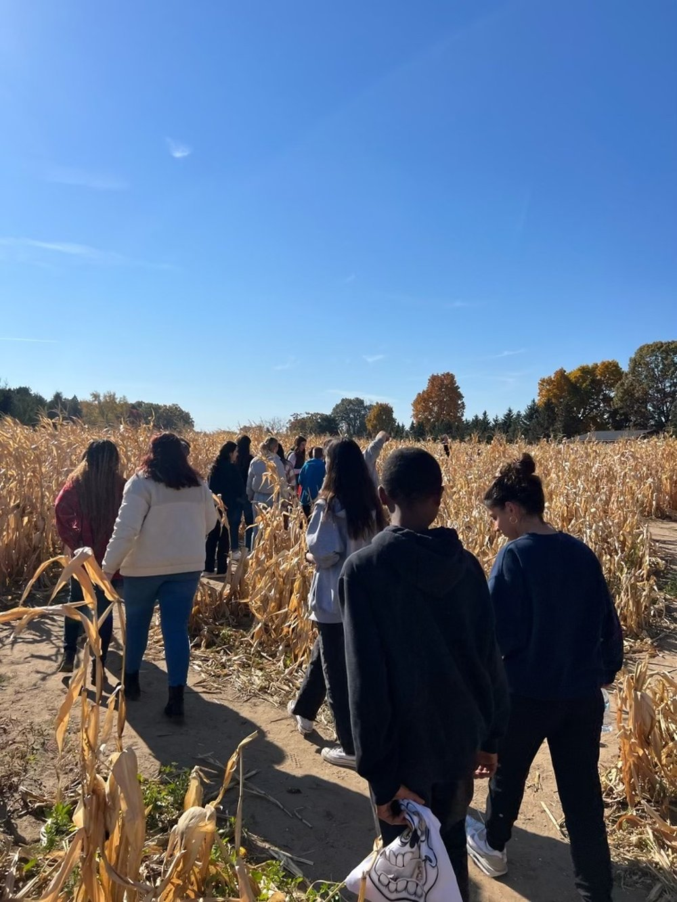

SUNNY is a student organization at the University of Michigan dedicated to bettering the lives of at-risk youth, specifically foster children, in the metro-Detroit area. We are accomplishing this goal by partnering with foster homes to implement interactive activities! Our members are dedicated to bringing about change and helping as many disadvantaged and underserved youth as possible.
